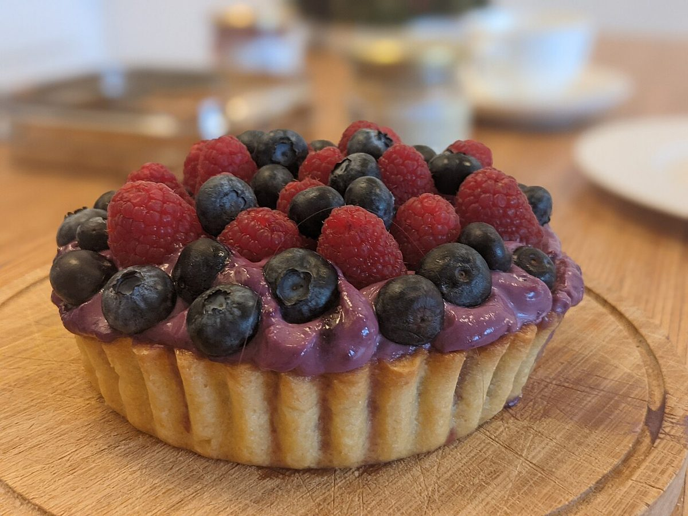
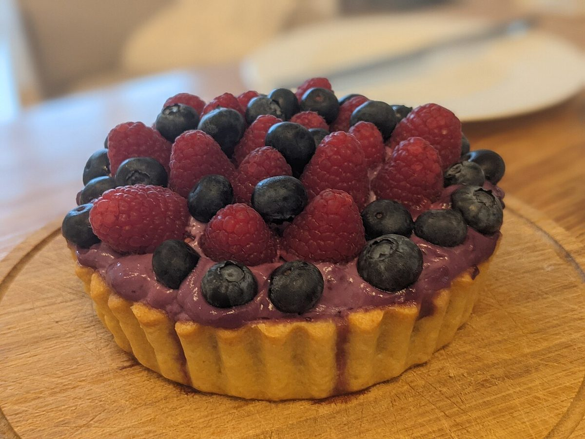
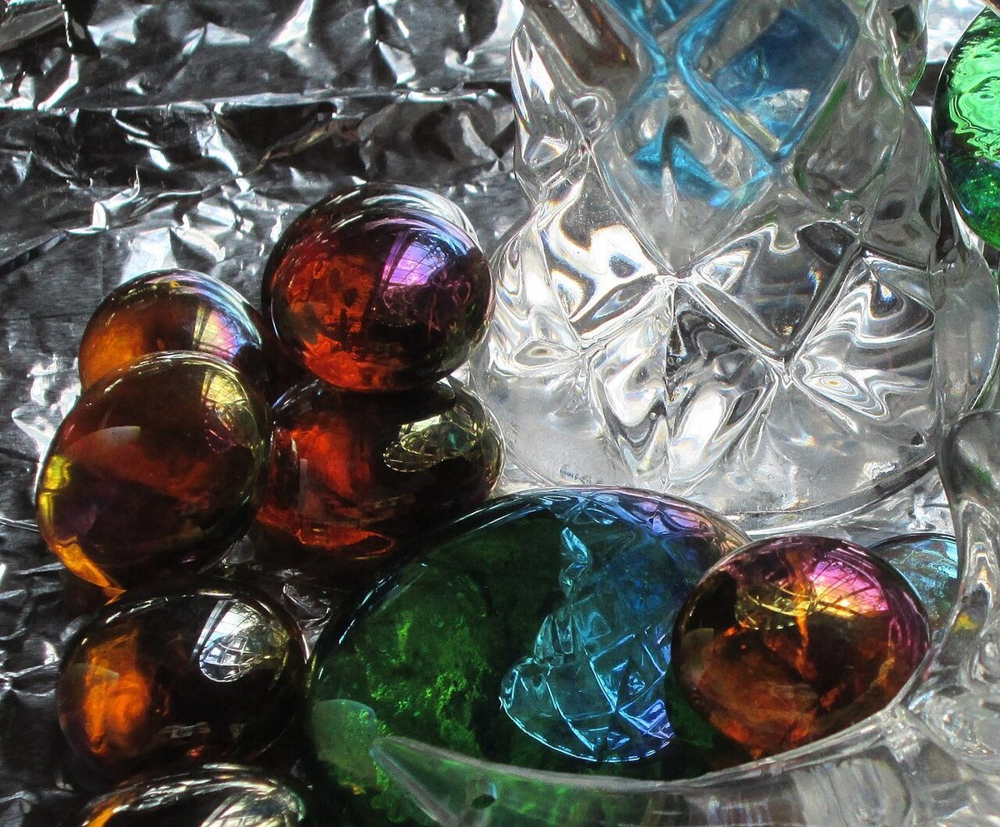

設備・条件
設備・条件一覧
確認できているのは、所在地とInstagramのアカウントだけです。ほかの欄はすべて「準備中」とし、憶測では埋めていません。
| 営業時間 | 準備中 |
|---|---|
| 定休日 | 準備中 |
| メニュー | 準備中 |
| 価格 | 準備中 |
| ご予約 | 準備中 |
| 駐車場 | 準備中 |
| 電話 | なし |
内見写真(イメージ)
写真で見る、紙面の雰囲気。
以下の写真は、国外または撮影地不明のフリー素材です。お店の商品や店内ではありません。
- 01

同じタルトを横から見た写真(イメージ) - 02

木苺とブルーベリーのタルトの写真(イメージ) - 03

ブルーベリーの写真(イメージ) - 04
生クリームをのせたカップの写真(イメージ) - 05

光を通すガラスの写真(イメージ)